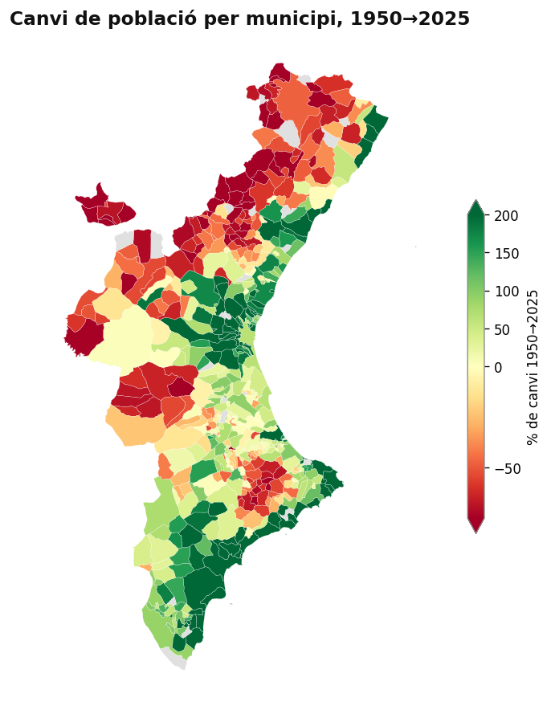
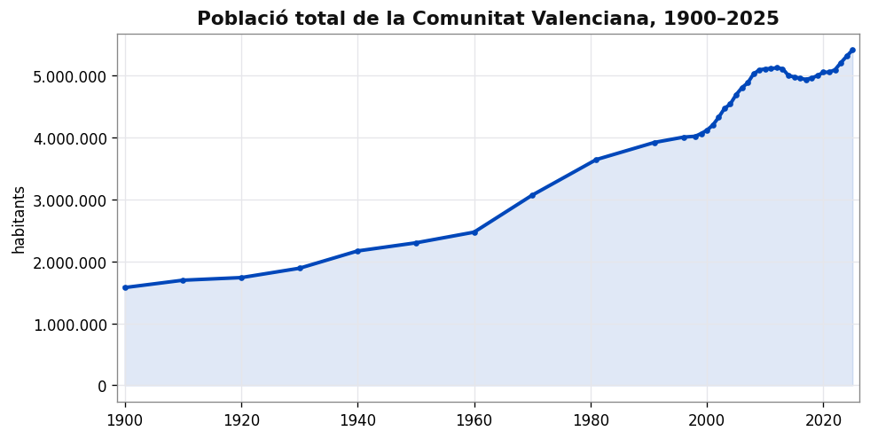
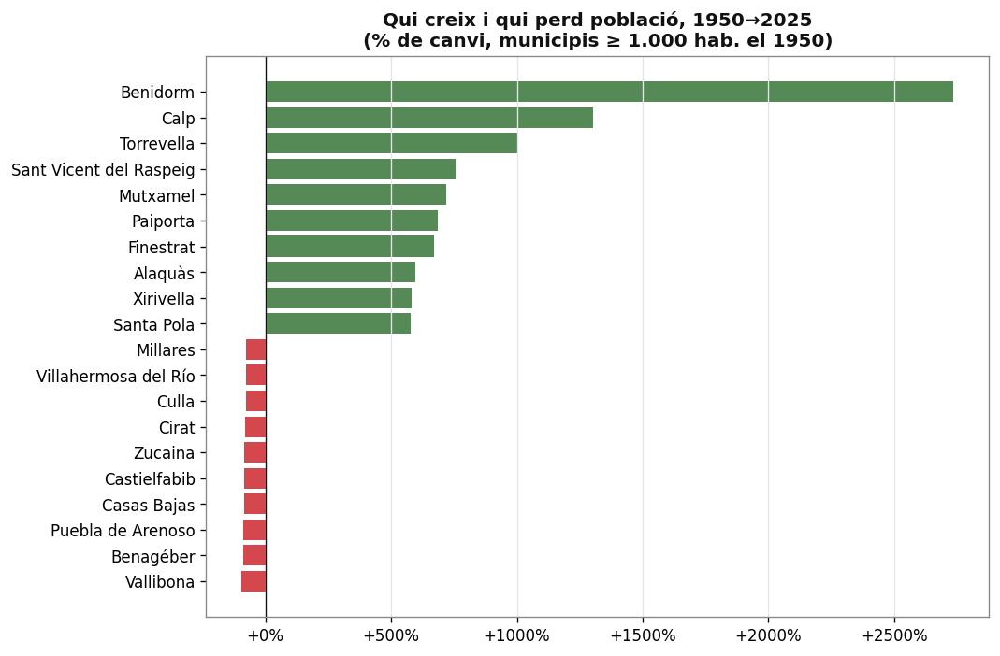
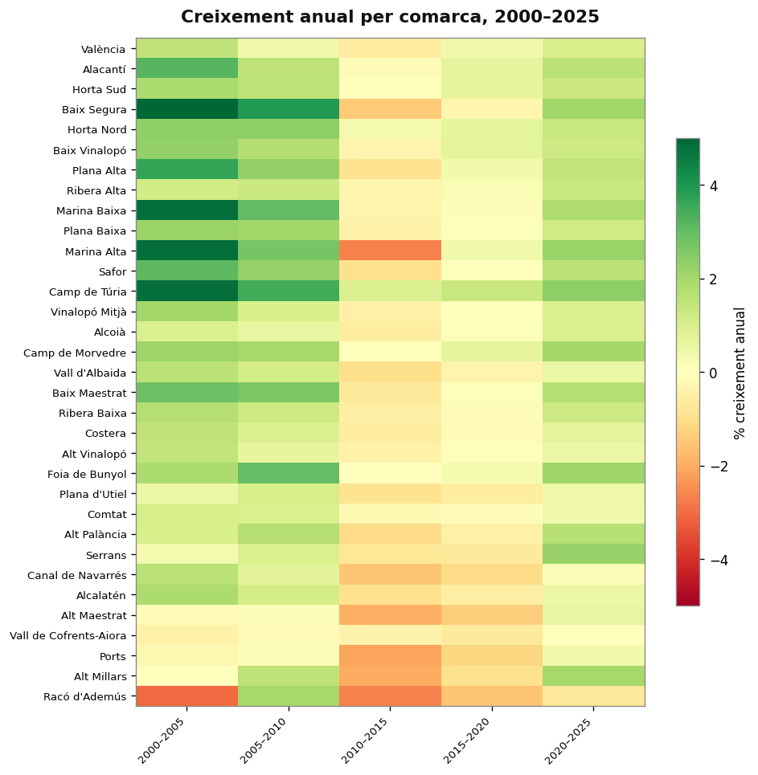
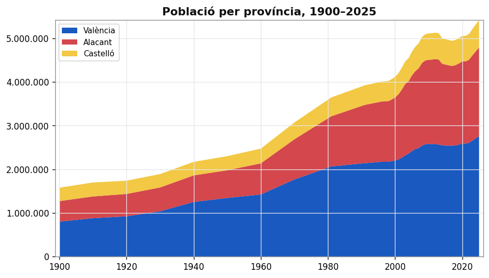
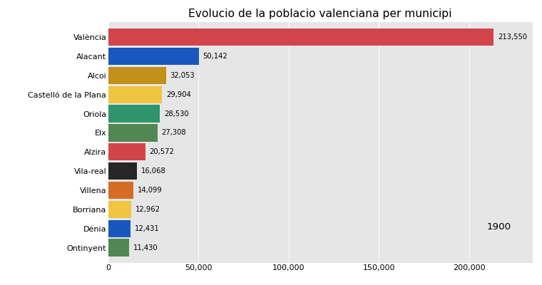

El mapa del despoblament

Creixement i declivi




Ciutats i evolució

Dataset obert amb la població de cada municipi de la Comunitat Valenciana, 1900–2025, a partir dels censos i el padró de l'INE.





